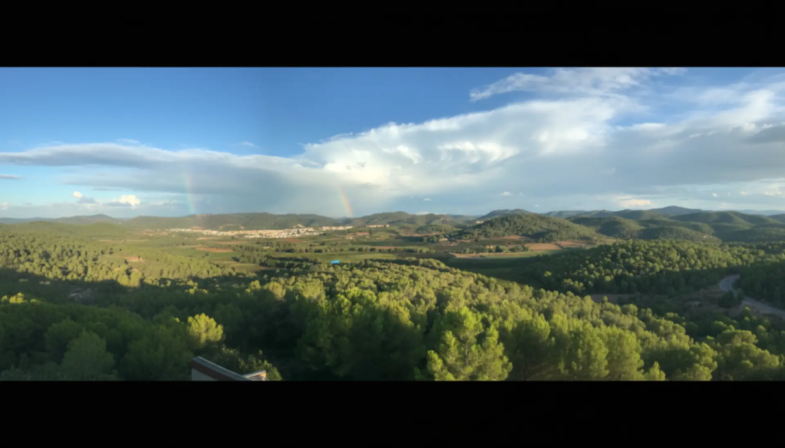
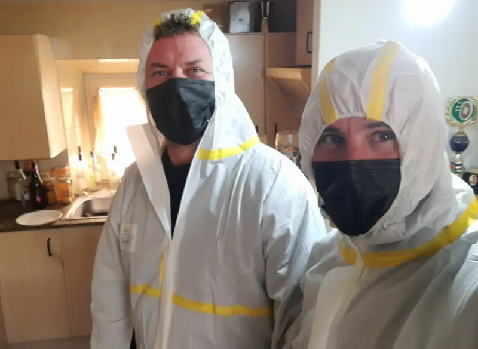
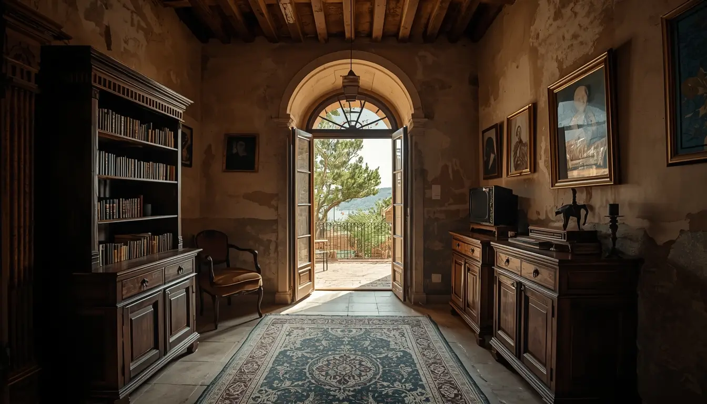
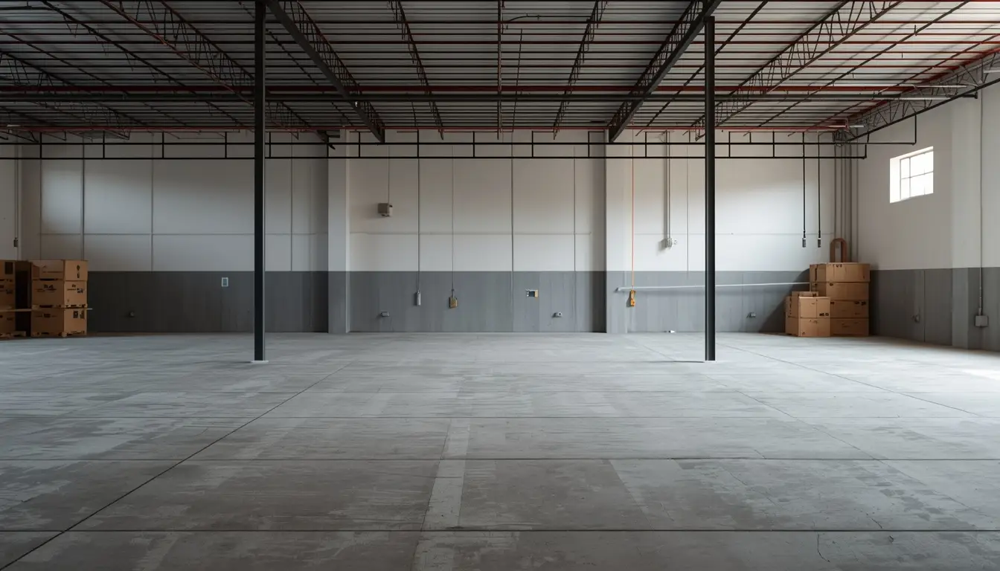
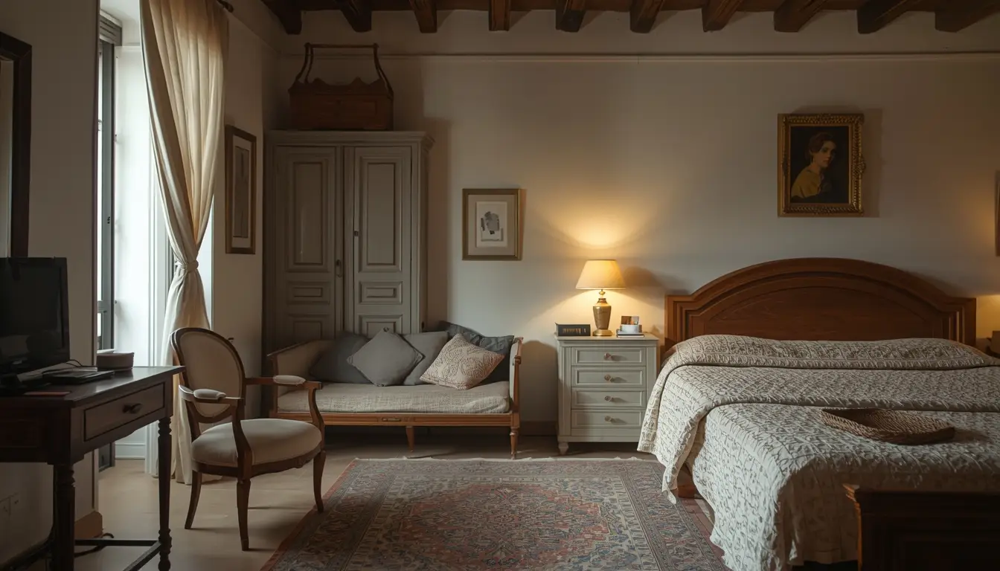

Sant Pere de Ribes · Garraf · Empresa del Pueblo
Vaciado de pisos en Sant Pere de Ribes
como solo un vecino puede hacerlo
No somos una empresa que viene de fuera. Vivimos aquí, trabajamos aquí y nos conocen en el pueblo. Cuando nos llama, está llamando a un vecino, no a una empresa anónima de Barcelona.
Empresa local del pueblo
No somos una empresa de Barcelona que viene ocasionalmente
Nuestra empresa está físicamente en Ribes, en Carrer de la Torreta, 8, local 7. Puede venir a vernos cuando quiera. Vivimos en el pueblo, trabajamos en el pueblo y nos conocen en el pueblo.
Conocemos las comunidades, los administradores, las urbanizaciones y las particularidades de cada zona. Hemos trabajado en casi todas las urbanizaciones del municipio: Can Ramon, Els Avets, Les Casetes, Mas Solers, Can Ribes, Can Trabal y muchas más.

Foto del equipo en Ribes
Por qué contratarnos
La ventaja de contratar al vecino del pueblo
La diferencia entre contratar a una empresa de Barcelona y contratar a alguien que vive donde usted.
Conocemos a todo el mundo
En Ribes, muchas cosas se solucionan con un teléfono y conocer a la persona adecuada. Conocemos a los administradores, los presidentes de comunidad, los cerrajeros, los fontaneros de confianza. Todo es más fácil cuando te conocen.
Vehículos discretos
Trabajamos con vehículos sin publicidad llamativa, avisamos a los vecinos directamente afectados antes de empezar, respetamos los horarios de siesta y de tranquilidad, y mantenemos absoluta confidencialidad sobre todos nuestros trabajos.
Acceso a urbanizaciones
Conocemos a la mayoría de los administradores y guardas de las urbanizaciones de Ribes. Tenemos permisos habituales para entrar en Can Ramon, Els Avets, Les Casetes, Mas Solers y el resto.
Compromiso de pueblo
En Ribes es diferente. Cuando contratas a alguien del pueblo, sabes que va a hacer bien el trabajo porque mañana te lo encuentras en el pan. Nuestra reputación es nuestra mayor garantía.



Servicios en Ribes
Servicios pensados para el pueblo, no para una gran ciudad
Entendemos las necesidades reales de los vecinos de Ribes. Cada servicio está adaptado a cómo funciona el pueblo.
Vaciado por defunción
Gestión sensible y discreta en momentos difíciles. En un pueblo pequeño como Ribes, sabemos lo importante que es el respeto y la confidencialidad. Conocemos los trámites locales y acompañamos a las familias con empatía, aliviando la carga emocional y burocrática.
Ver guía completaLimpieza Diógenes en Ribes
Discreción absoluta garantizada. En un pueblo donde todos se conocen, sabemos lo importante que es proteger la privacidad de los vecinos. Protocolos especializados con EPIs completos, desinfección con productos hospitalarios y ozonización. Residuos gestionados según normativa del Garraf.
Ver protocolo de limpieza DiógenesVaciado para alquiler
Gestión rápida para propietarios que alquilan en Ribes. Conocemos el mercado local y las necesidades de los caseros. Pack completo: vaciado de muebles, limpieza integral, pintura con colores neutros y reparaciones menores. Dejamos la vivienda lista para enseñar.
Saber másPintura para viviendas
Pintura profesional para casas y pisos de Ribes. Trabajamos con materiales de calidad y acabados duraderos. Incluye preparación de superficies y tratamientos específicos según el tipo de construcción, desde casas del casco antiguo hasta chalets de urbanización.
Saber másReparaciones básicas
Reparaciones rápidas para viviendas de Ribes con proveedores locales de confianza. Fontanería, electricidad, cerrajería y pequeñas reformas. Todo coordinado con un solo equipo y un único presupuesto.
Saber másGestión inmobiliaria y venta
Asesoramiento para vender o alquilar en Ribes. Conocemos el mercado local y trabajamos con inmobiliarias del pueblo y el Garraf. En algunos casos el vaciado puede salirle gratis si la propiedad se vende con nuestras inmobiliarias asociadas. Consulte su situación.
Saber másLimpieza profunda
Limpieza integral para casas vacías o después de obras. Dejamos la vivienda lista para habitar, para enseñar a compradores o para preparar el anuncio de alquiler.
Saber másAtención especial para personas mayores
Trato respetuoso, paciencia y ayuda en la transición para las personas mayores de Ribes. Entendemos la importancia emocional de cada objeto y trabajamos a un ritmo que respeta la dignidad de las personas y sus familias.
Saber másCobertura municipal
Conocemos cada rincón de Sant Pere de Ribes
Trabajamos en todo el término municipal. No hay urbanización, barrio o zona rural que no conozcamos.
Casco Antiguo – Ribes PuebloCalles estrechas, casas antiguas, comunidades pequeñas. Familias que llevan generaciones en Ribes, vecinos que se conocen de toda la vida. Trabajamos con la discreción y el respeto que requiere el pueblo.
Can RamonUna de las urbanizaciones más grandes del municipio. Conocemos a los administradores, tenemos acceso habitual y sabemos los horarios de carga y descarga permitidos. Sin esperas ni complicaciones.
Els Avets y Les CasetesUrbanizaciones con normas específicas de comunidad. Coordinamos directamente con las administraciones de fincas para evitar cualquier problema de acceso o protocolo.
Mas Solers y Can RibesÁreas residenciales con chalets y casas de campo. Experiencia en fincas con jardín y propiedades de cierto tamaño que requieren equipos más grandes y más tiempo.
Can Trabal y Can GuaschZonas familiares tranquilas. Respetamos la dinámica del barrio: avisos previos a vecinos, trabajo silencioso y gestión sin molestias para la comunidad.
La Riereta y El Pla de RibesZonas más rurales del municipio con accesos a veces complicados. Tenemos experiencia en fincas aisladas y propiedades que llevan años sin uso.
Cómo trabajamos en Ribes
Proceso adaptado al pueblo, paso a paso
Cada pueblo tiene su manera de funcionar. Nuestro proceso está pensado para respetar la tranquilidad de Ribes y facilitar la vida a los vecinos.
Visita rápida desde el mismo pueblo
Al estar en Carrer de la Torreta, podemos acercarnos en minutos para valorar el piso, casa o local. Sin esperas ni desplazamientos largos. También hacemos videollamada si prefiere no coincidir.
Coordinación con vecinos y comunidad
Antes de empezar, avisamos a los vecinos afectados, hablamos con el presidente de la comunidad si es necesario y coordinamos horarios. En Ribes, eso marca la diferencia.
Trabajo discreto y ordenado
Respetamos la siesta, los horarios de descanso y la privacidad. Vehículos sin publicidad llamativa, gestión de accesos en urbanizaciones cerradas y máxima consideración por el entorno.
Gestión de residuos y entrega
Clasificamos, reciclamos o eliminamos según la normativa del Garraf. Lo que se puede donar, se dona. Le entregamos los certificados de gestión y la vivienda limpia y lista.
Precios orientativos
Precios de pueblo, sin letra pequeña
Al estar en el mismo pueblo no cobramos desplazamiento dentro de Ribes. Presupuesto cerrado y gratuito en menos de 24 horas.
Piso 50–60m² con muebles vacíos
Piso 50–60m² con muebles y enseres
Casos de acumulación severa, desde
* Precios orientativos. Presupuesto exacto tras visita o valoración gratuita.
Sin desplazamiento
Estamos en el mismo pueblo. A diferencia de empresas de Barcelona que cobran entre 80 y 150€ solo por venir, nosotros no cobramos desplazamiento dentro de Ribes y alrededores. Eso repercute directamente en el precio final.
Recursos oficiales
Información municipal útil para vecinos de Ribes
Normativa, trámites y recursos del Ajuntament de Sant Pere de Ribes y el Consell Comarcal del Garraf.
🏛️ Ajuntament de Sant Pere de Ribes
Página oficial del ayuntamiento con trámites y noticias municipales.
santperederibes.cat📜 Normativa municipal
Ordenanzas, trámites, residuos y normas de convivencia del municipio.
Ordenanzas y reglamentos🗑️ Deixalleria del Garraf
Puntos limpios y gestión responsable de residuos en la comarca.
Deixalleries del GarrafVecinos que confían
Lo que dicen nuestros vecinos de Ribes
«Vaciaron el piso de mis padres en el casco antiguo. Lo que más me gustó fue que llamaron a los vecinos para avisar, respetaron la hora de la siesta y fueron super discretos. Eso en un pueblo pequeño como Ribes se valora mucho.»
«Excelente servicio en Can Ramon. Ya conocían al administrador y tenían los permisos gestionados. Vinieron en 10 minutos desde el pueblo y el precio fue mucho mejor que la empresa de Barcelona que me había dado presupuesto.»
«Ayudaron a mi madre a vaciar su casa para ir a la residencia. Fueron increíblemente pacientes y respetuosos. Al ser del pueblo, entendían perfectamente la situación y trataron todo con mucha delicadeza.»
Preguntas frecuentes
Lo que nos preguntan los vecinos de Ribes
Resolvemos las dudas más comunes de un pueblo donde la confianza y la discreción son fundamentales.
Estamos físicamente en Ribes. Nuestra empresa está en Carrer de la Torreta, 8, local 7. Puede venir a vernos cuando quiera. No somos una empresa de Barcelona que viene ocasionalmente. Vivimos, trabajamos y somos parte de la comunidad de Ribes.
En Ribes entendemos que la discreción es fundamental. Trabajamos con vehículos sin publicidad llamativa, avisamos solo a los vecinos directamente afectados, respetamos los horarios de tranquilidad y mantenemos absoluta confidencialidad sobre todos nuestros trabajos.
Conocemos a la mayoría de los administradores y guardas de las urbanizaciones de Ribes. Tenemos permisos habituales para entrar en Can Ramon, Els Avets, Les Casetes, Mas Solers y el resto. Normalmente ya estamos registrados en los sistemas de seguridad, lo que evita retrasos.
La principal ventaja es la responsabilidad y el compromiso. En un pueblo pequeño, nuestra reputación lo es todo. No podemos permitirnos hacer un mal trabajo porque todo el mundo se enteraría. Además, al estar aquí, respondemos rápidamente a cualquier imprevisto sin costes adicionales.
Sí, trabajamos con inmobiliarias de Ribes y el Garraf que conocen el mercado local. Si necesita vender o alquilar su propiedad, podemos coordinar el vaciado con la gestión inmobiliaria para optimizar tiempos y costes.
Al estar en el mismo pueblo no cobramos desplazamiento dentro de Ribes. Un piso estándar de 50–60m² con muebles vacíos cuesta desde 750€. Con muebles llenos y enseres, desde 1.150€. Los casos de síndrome de Diógenes parten de 3.500€. El presupuesto es cerrado y gratuito, entregado en menos de 24 horas.
Contacto local
¿Necesita vaciar una propiedad en Sant Pere de Ribes?
Le respondemos en menos de 1 hora. Presupuesto cerrado y sin compromiso. Somos su vecino de Ribes.
Contacto directo en Ribes
Teléfono
688 30 41 43Horario
Lunes–Viernes: 8:00–20:00
Sábados: 9:00–14:00
Urgencias disponibles
Estamos en Ribes
Carrer de la Torreta, 8, local 7
08810 Sant Pere de Ribes
Puede venir a vernos personalmente
Sin desplazamiento
Al estar en el mismo pueblo, no cobramos desplazamiento dentro de Ribes.
Formulario para vecinos de Ribes
Rellene el formulario y le llamamos en menos de 1 hora con un presupuesto orientativo.
¿Necesita vaciar una propiedad en Sant Pere de Ribes?
No llame a una empresa anónima de Barcelona. Llame a su vecino de Ribes. Estamos aquí, en el pueblo, trabajando para los vecinos. Precios justos, servicio rápido y la confianza que solo da contratar a alguien que vive donde usted.
Solicitar presupuesto de vecino